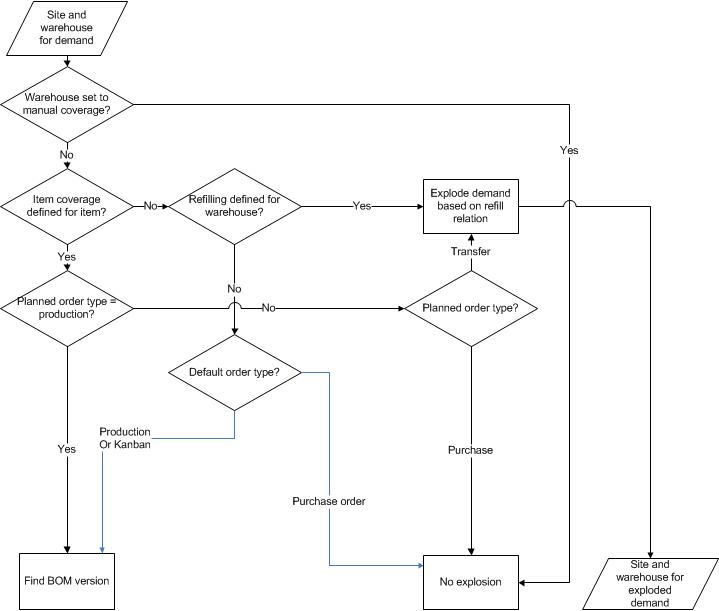

Produktprogrammplanungslauf - Standort- und Lagerdisposition, Lagerort obligatorisch
Important
Dynamics 365 for Finance and Operations hat sich zu speziell entwickelten Anwendungen entwickelt, mit denen Sie bestimmte Geschäftsfunktionen verwalten können. Weitere Informationen zu diesen Änderungen finden Sie im Dynamics 365-Lizenzierungshandbuch.
In diesem Thema wird beschrieben wie ein Artikel, der Standort und Lagerort als Deckungsdimension hat, geplant wird. Die Lagerortdimension ist obligatorisch.
Für dieses Produktprogrammplanungsszenario müssen die folgenden Bedingungen erfüllt sein:
- Die Standortdimension ist als obligatorische Dimension festgelegt und muss für die Bedarfsbuchung angegeben werden.
- Die Lagerortdimension ist als obligatorische Dimension festgelegt und muss zwingend für die Bedarfsbuchung angegeben werden.
- Die Standort- und Lagerortdimension werden für die Disposition festgelegt. Für die Disposition können auch andere Dimensionen festgelegt werden. Für diese ergeben sich jedoch keinerlei Auswirkungen durch die Funktion für mehrere Standorte.
In der folgenden Grafik wird der Ablauf der Produktprogrammplanung veranschaulicht. Die Parameter, auf die in der Grafik Bezug genommen wird, sowie deren Position werden im Folgenden erläutert:
- Der Lagerort ist auf Manuell festgelegt. Klicken Sie auf Lagerverwaltung > Einstellungen > Lageraufschlüsselung > Lagerorte. Wählen Sie auf dem Inforegister Produktprogrammplanung das Feld Manuell.
- Für den Artikel ist die Artikeldeckung definiert. Klicken Sie auf Produktinformationsverwaltung > Produkte > Freigegebene Produkte. Wählen Sie einen Artikel aus, und klicken Sie anschließend im Aktivitätsbereich auf der Registerkarte Plan auf Artikeldeckung.
- Für den Lagerort sind Auffüllbeziehungen definiert. Klicken Sie auf Lagerverwaltung > Einstellungen > Lageraufschlüsselung > Lagerorte. Wählen Sie auf dem Inforegister Produktprogrammplanung die Feldgruppe Hauptlagerort.
- Der standardmäßige Auftragstyp wird zur Produktion, der Bestellung oder dem Kanban festgelegt. Klicken Sie auf Produktinformationsverwaltung > Produkte > Freigegebene Produkte. Wählen Sie einen Artikel aus, und klicken Sie anschließend im Aktivitätsbereich auf der Registerkarte Plan auf Standardauftragseinstellungen. Im Formular Standardauftragseinstellungen sehen Sie den Standardauftragstyp.

Zusätzliche Ressourcen
Hauptpläne und Funktion für mehrere Standorte – Übersicht
Hauptplanung für Standortdeckung, Lagerort obligatorisch
Hauptplanung für Standortdeckung, Lagerort nicht obligatorisch
Produktprogrammplanung für Disposition an Standort und Lagerort, Lagerort nicht obligatorisch